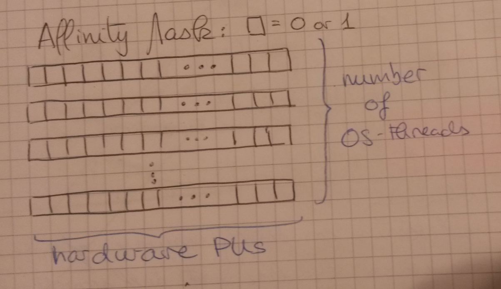

See Also: hpx::threads::hwloc_topology_info (is derived from), hpx::threads::noop_topology (is derived from)
the only one that isn't purely virtual
used in affinity_data::get_pu_mask
See Also: hwloc_topology_info& create_topology()
See Also: hpx::threads::topology (is derived from)
(static const std::size_t pu_offset, static const std::size_t core_offset)
See Also: creates a topology using the helper-struct static_

in file cpu_mask.hpp
(if HPX has less than 64 threads, if HPX has max CPU count, otherwise)
See Also: hpx::threads::topology (is derived from)